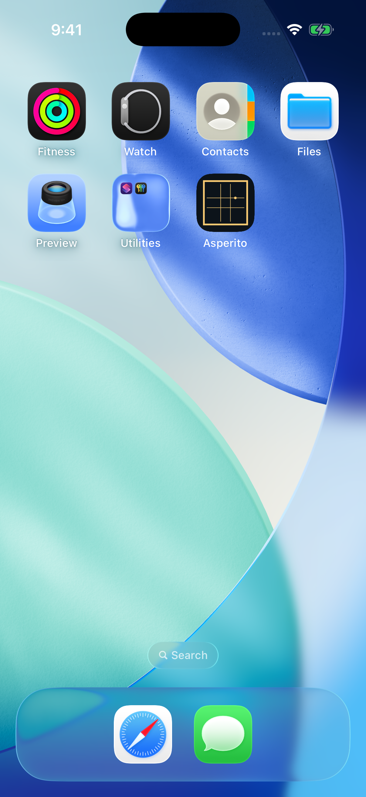
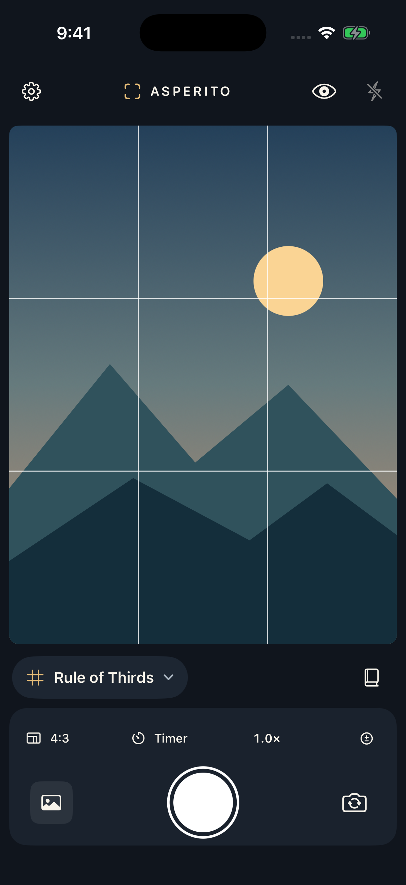
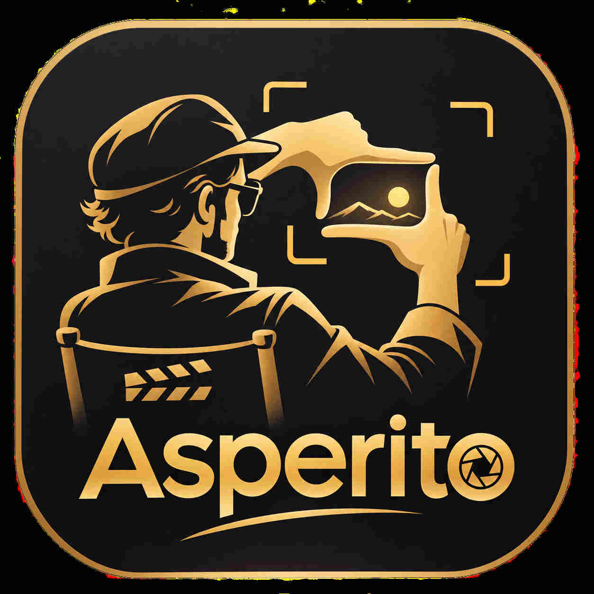
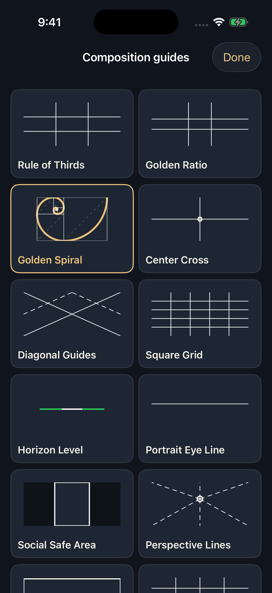
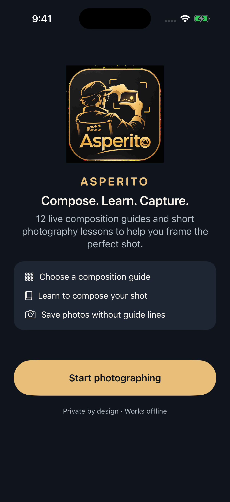
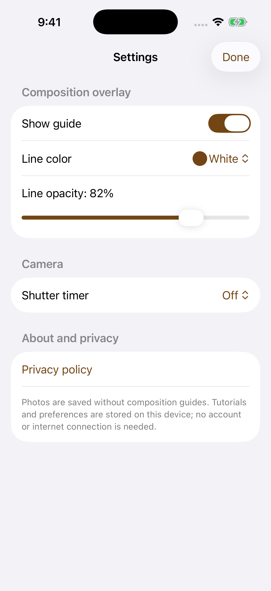
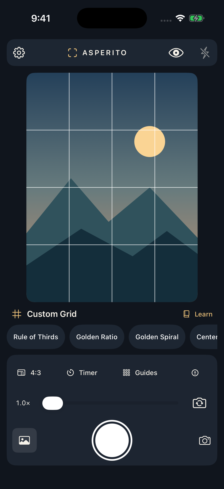
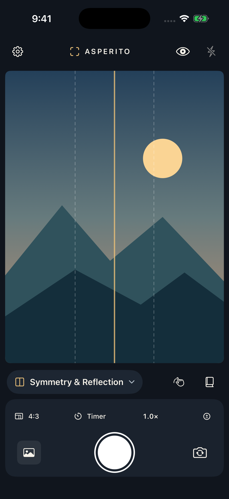
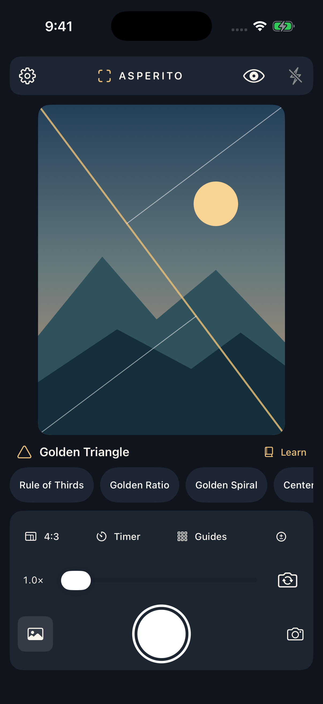
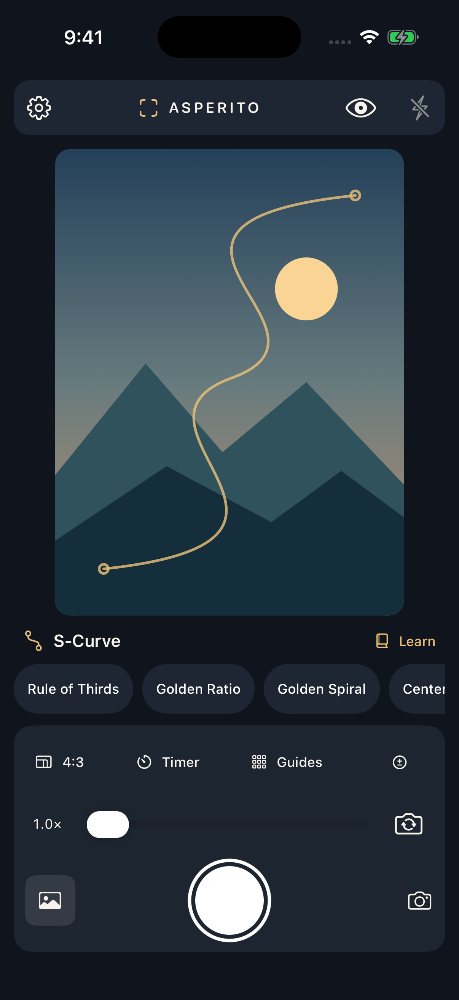

01 / FRAME
Focus on what matters.
A distraction-free viewfinder. A thoughtful set of tools. Your eye does the rest.

Meet Asperito. Your camera, with a new perspective. Compose beautifully, learn intuitively, and capture the moment as you imagined it.


The director's simple framing gesture inspired Asperito. Before there is a photograph, there is a moment of intention. Find your composition, trust your eye, and capture what matters.
COMPOSE. LEARN. CAPTURE.Every great photograph is a choice. Find balance, create movement, chase symmetry—or break the rules with intention.
Bring balance to the ordinary. Position subjects along intersections and let the composition breathe.
Tap any guide to explore its real in-app screenshot.
Designed to stay out of the picture—and give you everything you need to create it.
A distraction-free viewfinder. A thoughtful set of tools. Your eye does the rest.

Simple, offline lessons turn every guide into a new creative instinct.

Pick your guide, change its color and opacity, and experiment with your own grid.

Compose with intention. Capture a clean original image. No account or cloud uploads required.
A look inside the real Asperito iPhone app. Swipe to explore.






Asperito for iPhone. Built with care, created for curiosity.
Explore on GitHub TestFlight distribution is being prepared. This is a product preview, not an App Store download link.